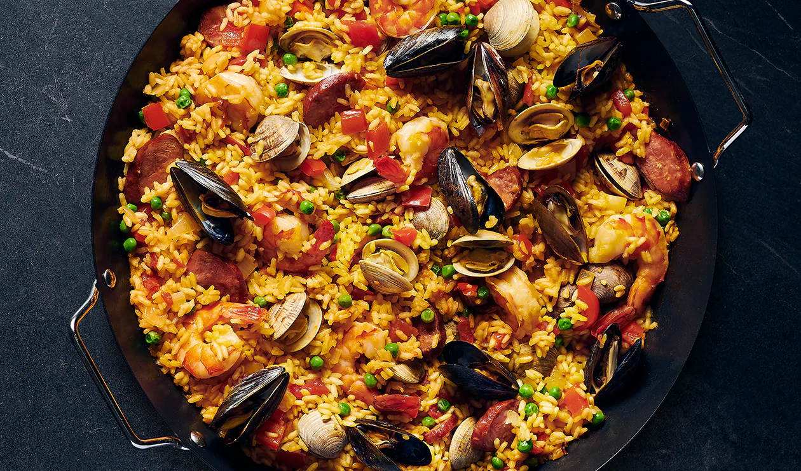
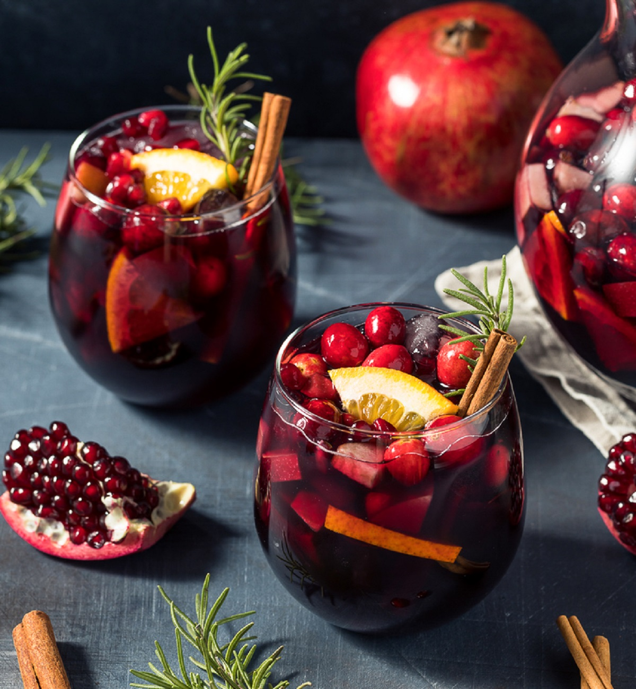

Spanyol ízvilág
A spanyol ízvilág a mediterrán frissesség, a mór fűszerezés
(sáfrány, kömény) és a kiváló minőségű alapanyagok – olívaolaj, fokhagyma,
tengeri herkentyűk, érlelt sonkák (jamón) – harmonikus ötvözete.
Jellemzőek a tartalmas egytálételek (paella), a tapas kultúra, a sült paprikák
és a gazdag bor- valamint vermutkultúra, melyek együttesen napfényes, intenzív
gasztronómiai élményt nyújtanak.
Főbb jellemzők és alapanyagok
- Alapok: Kiváló minőségű olívaolaj, fokhagyma, hagyma, paradicsom és fűszerpaprika (pimentón).
- Tapas kultúra: Kis adagokban kínált előételek, mint a patatas bravas (sült burgonya csípős szósszal) vagy a padrón paprika.
- Jamón Ibérico: Világhírű, makkal etetett sertésből készült, érlelt sonka.
- Paella: Sáfránnyal ízesített rizses étel, mely eredetileg Valenciából származik, tenger gyümölcseivel vagy húsokkal.
- Tengeri herkentyűk: Friss halak, tintahal, kagylók és rákok, különösen a tengerparti régiókban.
- Tortilla Española: Klasszikus, vastag burgonyás omlett.
- Italok: Cava (pezsgő), sherry, sangria és a népszerű vermut.


Főoldal